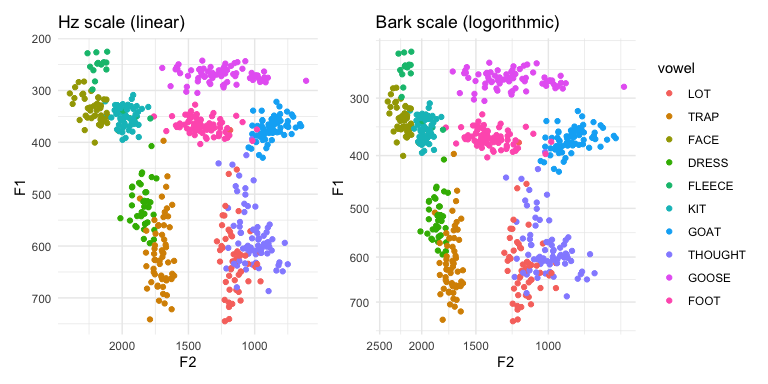
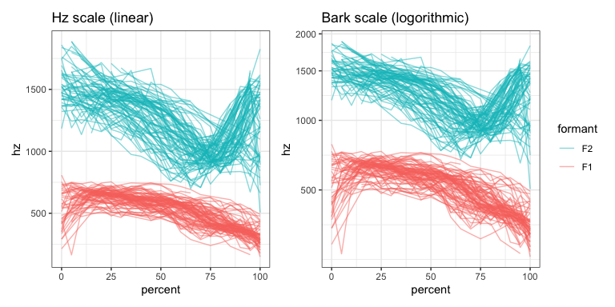

Functions to help when working with Barks.
This package makes it easier to work with the Bark scale when analyzing and plotting acoustic data. It contains two pairs of functions. The first (bark and hz) convert between Hz and Barks. The other (scale_x_bark and scale_y_bark) make it easy to plot data in ggplot2 using the Bark scale.
You can use scale_x_bark and scale_y_bark within a ggplot to plot the data in Hz but scaled into Barks. In the following side-by-side comparison of an F1-F2 plot, the figure on the left uses a linear scale. Meanwhile, in the figure on the right, the left and bottom portions of the plot is more compressed.

The plot on the right looks the same as if you had plotted the data in Barks themselves, except the axes are in Hz instead of Barks.
In the following spectrogram plots, we only need to use the Bark scale along the y-axis. In the left panel, which displays the data in a linear scale, F2 takes up the majorty of the plot. Meanwhile, in the plot on the right, F1 is wider and F2 is more compressed.

You can also use barktools to convert between hz and barks with the hz and barks functions:
bark(500)
hz(3)
You can use this to convert entire vectors as well:
Or, more elegantly, with in a tidyverse pipeline:
## # A tibble: 564 x 9
## vowel F1 F2 F3 F4 F1_bark F2_bark F3_bark F4_bark
## <fct> <dbl> <dbl> <dbl> <dbl> <dbl> <dbl> <dbl> <dbl>
## 1 GOAT 368. 1018. 2602. 3168. 3.71 8.63 14.8 16.0
## 2 FACE 377. 2032. 2761. 3408. 3.79 13.1 15.2 16.5
## 3 FACE 314. 2179. 2915. 3380. 3.18 13.6 15.5 16.4
## 4 GOOSE 274. 1378. 2235. 3270. 2.76 10.5 13.8 16.2
## 5 FOOT 350. 1624. 2485. 3384. 3.53 11.6 14.5 16.4
## 6 FACE 313. 2181. 2863. 3205. 3.16 13.6 15.4 16.1
## 7 GOOSE 255. 1333. 2313. 3212. 2.55 10.3 14.0 16.1
## 8 THOUGHT 585 969. 2813. 3405 5.63 8.34 15.3 16.5
## 9 THOUGHT 527. 1201. 2733. 3434. 5.15 9.66 15.1 16.5
## 10 FOOT 367. 1594. 2477 3367 3.70 11.5 14.4 16.4
## # … with 554 more rows